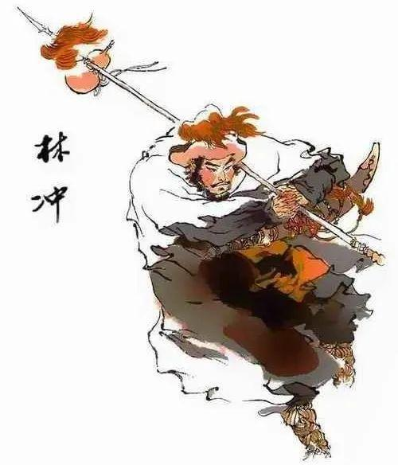

人物图片
人物评价
林冲，绰号豹子头，原本是八十万禁军枪棒教头，技艺高超，备受尊敬，十分隐忍。他的生活原本是安稳的，美满的。而一切的开始，便是去还愿的时候妻子被高衙内看中，碍于高太尉的地位和权力，林冲已十分隐忍，但仍引来了横祸。太尉高俅为了满足干儿子高衙内，竟然要将林冲置于死地。林冲先是被设计误入白虎堂，被判为“携刀私入白虎堂”，被刺配沧州。在发配的路上，他又受尽折磨。到了沧州后，林冲的遭遇并未好转，他因拿银子稍慢就被骂，后来又被陆虞侯追杀。这一系列的困境，让善良正义的林冲逐渐“黑化”。 林冲是典型的因官逼而反的英雄好汉。林冲的经历充满了波折和磨难。从最初在官府的安稳生活，到被陷害、发配、追杀，再到最后的落草为寇。在感情上，他受到了巨大的打击，最终他的妻子因高太尉高衙内害得只得选择了上吊自杀。在经历了一系列的磨难后，林冲终于觉醒，火烧草料场，他大开杀戒，留下了三具仇人的尸体，踏上了“落草为寇”的不归路。后又逼上梁山，因不满王伦的妒才，火并王伦，接纳了吴用等人。从这些看来，林冲简直是一个正直的人，善良的人。 我从他身上能联想到鲁智深。他同样也是武艺高超，正直善良的人，都是因为当时腐败的黑暗官场势力而逼的没有办法从而逼上梁山，落草为寇。 林冲，我称之为隐忍的正义使者。这也对我有所启发，当我们处于肯定是一定要勇于反抗，不要一味的隐忍，小心适得其反。